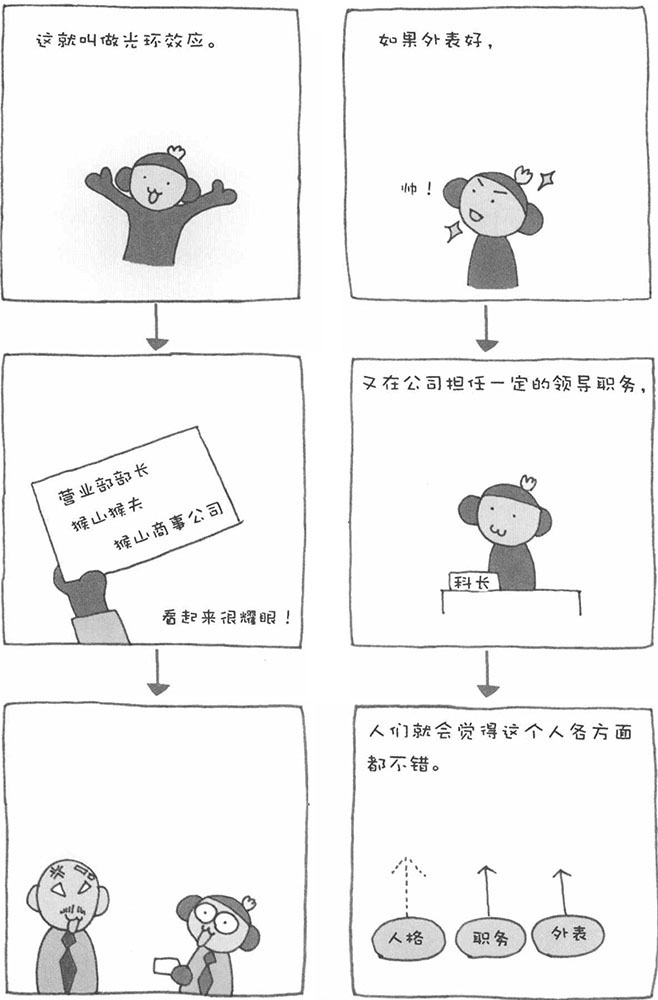

外表漂亮好处多多。我想所有人都有以貌取人的时候。有调查数据表明，对于漂亮女学生的考卷，大学教授会多加几分；美女在餐厅用餐后，算账时老板都会给予更多的优惠。不仅如此，如果一个人外表漂亮，人们还会觉得他性格好、有能力、聪明……心理学中将这种倾向称之为"光环效应"。一个人背后闪耀的光环会让他看起来更出色。
这一效应并不局限于人的外貌。比如，一提到名牌大学的毕业生，我们不仅会认为他们有学识，还会连带地认为其人格、能力等各方面都很优秀。再者，会说英语本来并不能与工作能力强完全划上等号。然而，如果某个职员会说英语，我们常常会感觉他工作能力很强。反之，如果某人有一点不好的名声，我们就会觉得他一无是处，见到他会觉得他全身都很别扭。此外，如果一个骗子穿上笔挺的西装，装出一副正直、老实的样子，我们大多情况下也会认为他很可靠。因此，以貌取人是非常要不得的。
接下来，为大家介绍一则2007年秋天的新闻。苹果公司推出的个人电脑Mac的销售量与前一年相比有飞跃性的提高，第四季度的销售增长率是业界平均增长率的8倍！首次购买苹果产品的用户也非常多。有经济分析人士认为，苹果公司之前推出的iPod和iPhone受到不论品质、设计还是易用性都得到消费者的较高评价，正因为如此，消费者对其个人电脑Mac也产生了浓厚的兴趣。也就是说，前两种产品的良好形象，为苹果公司制造了一个光环。在这个光环的照耀下，消费者对其推出的其他产品也抱有很高的期望。这也是光环效应的一种。
